~Illustrator Leaves to 24 Pixel Size~
1/15/2026
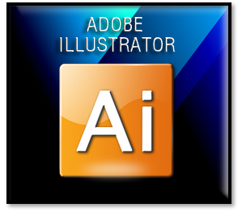
Create the Image
Have Copilot create a vector type image.
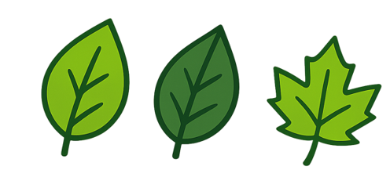
Pull that Image into Illustrator
6 Color Trace
You can try a 6 color Trace, of the Object. If it comes out with too many sections, you may have to resort to following the steps below.
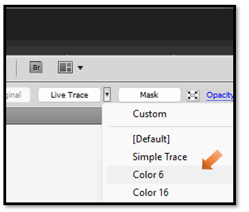It may come out with multiple paths, but you still might get lucky if you have two main paths and the rest of them turn out to be junk. Test the others by turning off the eyes and if the image still is showing strong you can remove the other paths.
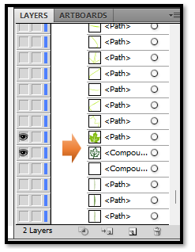
Full Retrace Process
Turn the first layer into a Template Layer. Go to the Hamburger Menu in the Layer panel, and choose Template.
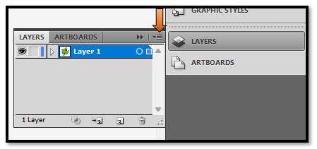 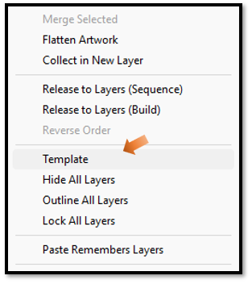
Add another layer to add artwork to create your different colored sections. Do not worry about multiple layers, Illustrator will create a new sub layer every time that you close a loop with the pen tool, to complete a section of color. Each color will then reside in a separate sub section layer.
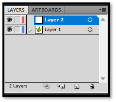Take the pen tool, and trace around each colored section, in the image.
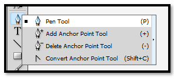Go to the Appearance Panel, Select Each section to add color to them individually. Make sure you have the selection that you want to color on the Artboard Selected.
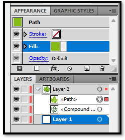Use the Color Chips, to change the color. You might want to turn off the outline as it will bulk things up too much. Just hit that icon with the red slash under the chips, and with the outline chip selected, click the icon. This will remove the outline from that section of the image.
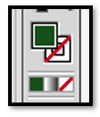 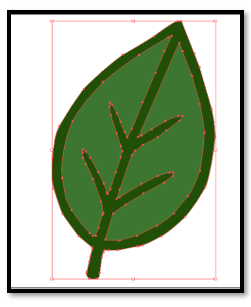To Shrink the image to a 24 to 24 px image after doing the work
Go to the top Menu File-Document Setup
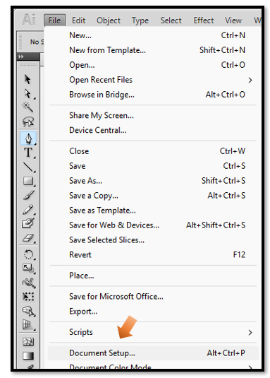Set Units to Pixels, Go to Edit Artboards
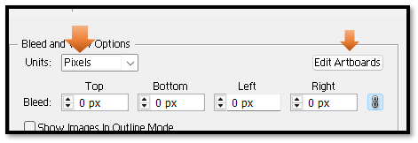Once in the art board set it to 24 x 24
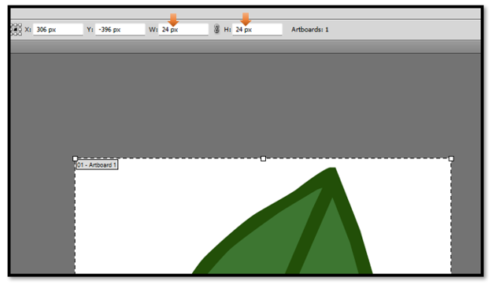
How to get out of the Art Board Tool
Once you are in the Art Board tool you might be a bit confused on how to get out of it. There is not a simple escape, or close icon in the tool. So, just hit another tool (such as, the arrow tool) in the left panel to come out of the Artboard.
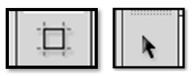Then shrink the image down to fit in the board. To do this, first you want to Grab the black arrow tool and draw a marque around the entire object on the screen. This will ensure that you have all of your individual pieces selected. Then grab the Free Transform tool and shrink the image down to fit into your tiny art board.
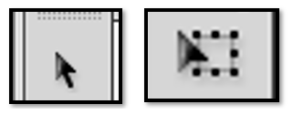
In Game Maker, and SVG format will not work, however if you are creating this for something else, where you can use an SVG, this is the time that you will want to save your image in your individual formats.
Save as a png. You will find that after going through this process even your Pngs will look better at this size. Because by using Illustrator, you have made them work at this size. Look at these crisp looking png images.
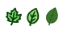